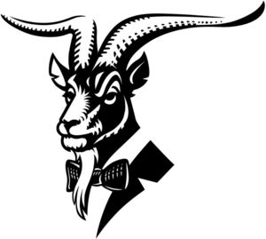

Trade Mark Journal No.2025/035 29 August 2025
WO0000001869464 (3,5,25)
Office of origin: Switzerland
Date of International Registration:4 June 2025
Date of designation in the UK:
4 June 2025

International priority date claimed: 9 December 2024
(Switzerland)
(825686)
- Class 3
- Non-medicated toiletry preparations and cosmetic products; non-medicated dentifrices; perfumery products, essential oils; oil baths for hair care; hair care creams; hair relaxing preparations; hair moisturizers; gels, sprays, foams and balms for hair styling and hair care; hair balms; hair creams; hair setting preparations; hair styling preparations; hair gels; hair lotions; hair oils; hair care and washing preparations; beauty care preparations for hair; hair pomades; hair shampoos and conditioners; hair sprays; hair emollients; hair styling preparations; hair tonics; hair waxes; hair care lotions; hair strengthening treatment lotions; hair-styling gels; 3-in-1 shampoos; facial creams for cosmetic use; facial emulsions; facial lotions for cosmetic use; facial masks for cosmetic use; beauty masks for the face; peeling preparations for the face for cosmetic use; facial preparations for cosmetic use; facial cleansers; facial lotions for cosmetic use; face, hand and body powders, gels, lotions, milks and creams for cosmetic use; beauty creams for the body and face; eye creams; eye gels; gel eye patches for cosmetic use; eye compresses for cosmetic use; eye lotions; under-eye enhancers (concealers); deodorants and antiperspirants for personal use; deodorants for body care; body deodorants (perfumery products); pre-shave creams; shaving and after-shave preparations; shaving balms; shaving creams; shaving lotions; shaving products; shaving foams; shaving soap; after-shave lotions; refreshing preparations for the breath and respiratory tract for personal use.
- Class 5
- Pharmaceutical products, medicinal preparations; dietetic food and substances for medical or veterinary use; food supplements for human consumption; medicated hair lotions; medicated hair care preparations; medicinal preparations for stimulating hair growth; hair growth stimulants for medical use; anti-inflammatories; sanitary products for medicine; pharmaceutical preparations with analgesic properties; pharmaceutical preparations for the treatment of sporting injuries; ointments for pharmaceutical use, massage gels for medical use; oils for medical use; lotions for pharmaceutical use; multi-purpose medical pain-relief creams; pain relief preparations; bath salts and bath preparations for medical use; bath preparations for medical use; powdered beverages as food supplements; nutritional supplement mixtures for beverages in the form of powders; protein food supplements.
- Class 25
- Clothing, footwear, headwear; underpants; underwear; union suits; boy shorts (underwear); long underwear; breathable underwear; sports tank tops; ankle socks; socks; dress socks for men; tabi (Japanese-style socks); thermal socks; printed T-shirts; padded shirts for sports; hooded sweatshirts; long-sleeved jerseys; running shirts; muscle shirts; mock turtleneck shirts; sports T-shirts; sweatshirts; tee-shirts; sweaters; fleece pullovers; mock turtleneck tops; turtleneck sweaters; men's suits; clothing for men; pocket squares; Ascots; shawls and headscarves; caps; baseball caps; peaked caps; hats; small hats.
Gaisbock AG
Representative: E. Blum & Co. AG, Hofwiesenstrasse 349, CH-8050 Zürich, SWITZERLAND